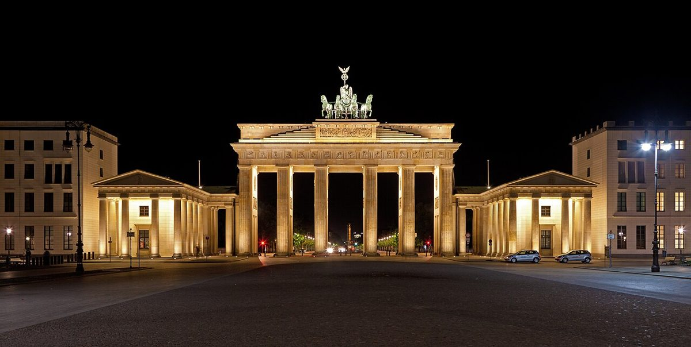

柏林勃兰登堡门：历史与文化的象征

柏林勃兰登堡门是德国最具标志性的建筑之一，也是欧洲历史与文化的重要象征。它不仅代表了柏林的过去与现在，也吸引了无数游客前来朝圣。无论你是历史爱好者、建筑迷，还是仅仅想感受这座城市的氛围，勃兰登堡门都是一个不容错过的目的地。
如何到达勃兰登堡门
勃兰登堡门位于柏林市中心，交通非常便利。你可以乘坐地铁（U-Bahn）到Brandenburger Tor站，或用公交车直接到达。此外，如果你喜欢步行，从著名的菩提树下大街（Unter den Linden）漫步而来也是一种体验，沿途还能欣赏柏林的其他历史建筑和风景。
最佳的旅行时间
柏林四季各有特色，但春秋两季是游览勃兰登堡门的最佳时间。春季气候宜人，公园和街道绿意盎然；秋季则色彩斑斓，温度适中。夏季虽然热闹，但游客较多，冬季则较为寒冷，但节日的灯光为勃兰登堡门增添了一份温馨的氛围。
勃兰登堡门的五大亮点
1. **勃兰登堡门本身**：这座新古典主义建筑由12根多立克柱支撑，顶部是著名的胜利女神铜像，象征着和平与胜利。
2. **巴黎广场**：勃兰登堡门前的广场曾见证了无数历史事件，如今是游客聚集的热门地点，周围还有许多标志性建筑。
3. **柏林墙遗址**：距离勃兰登堡门不远，柏林墙遗址提醒着人们这座城市的分裂与统一。
4. **菩提树下大街**：这条充满历史感的街道连接了勃兰登堡门和柏林的其他重要景点，沿途有许多博物馆、剧院和咖啡馆。
5. **夜景**：夜晚的勃兰登堡门灯光璀璨，尤其在新年庆典或重要节日时，这里会成为欢乐的海洋。
柏林美食推荐
游览勃兰登堡门后，不妨品尝一下柏林的特色美食。这里的德国香肠（Currywurst）和猪肘（Eisbein）非常有名，还有许多提供传统德国菜肴的餐厅。如果你想尝试国际风味，柏林也有丰富的选择，从土耳其烤肉（Döner）到亚洲料理，应有尽有。
勃兰登堡门不仅是一座历史建筑，更是柏林灵魂的象征。无论你是第一次来柏林，还是多次造访，它都会带给你新的感动与启发。
Haiktec
Text mit KI erstellt und automatisch geprueft.